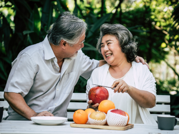

hỏi chuyên gia
Xét nghiệm chẩn đoán viêm gan C là hoạt động được khuyến khích và
vô cùng cần thiết.
Một lượng nhỏ chất béo và dầu có vai trò rất quan trọng trong việc dự trữ năng lượng, bảo vệ các mô của cơ thể và vận chuyển vitamin. Tuy nhiên, quá nhiều chất béo lại gây ra tình trạng tích tụ mỡ trong gan,
nhận xét khách hàng

Viêm gan C kiêng ăn gì? Thực phẩm và thuốc nên tránh
Một chế độ ăn uống không khoa học, kém hợp lý có thể khiến bệnh nhân viêm gan C chậm hồi phục và tăng nguy cơ tổn thương gan nặng hơn. Do đó, người bệnh cần đặc biệt lưu ý khi lựa chọn thực phẩm tiêu thụ hàng ngày.